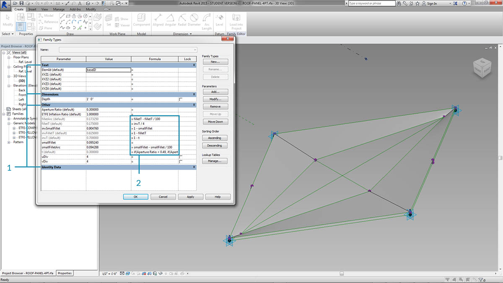
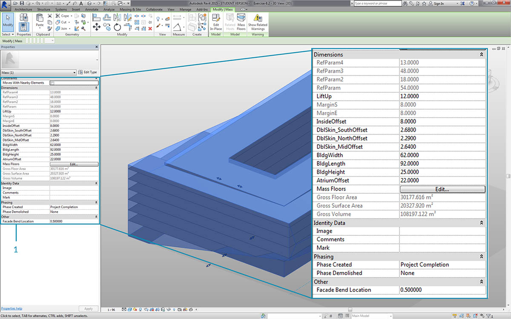
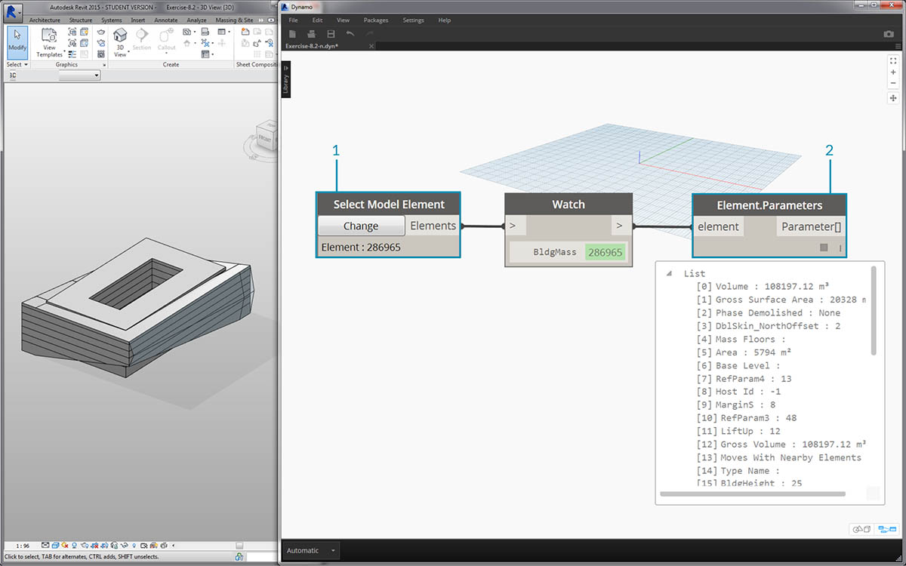
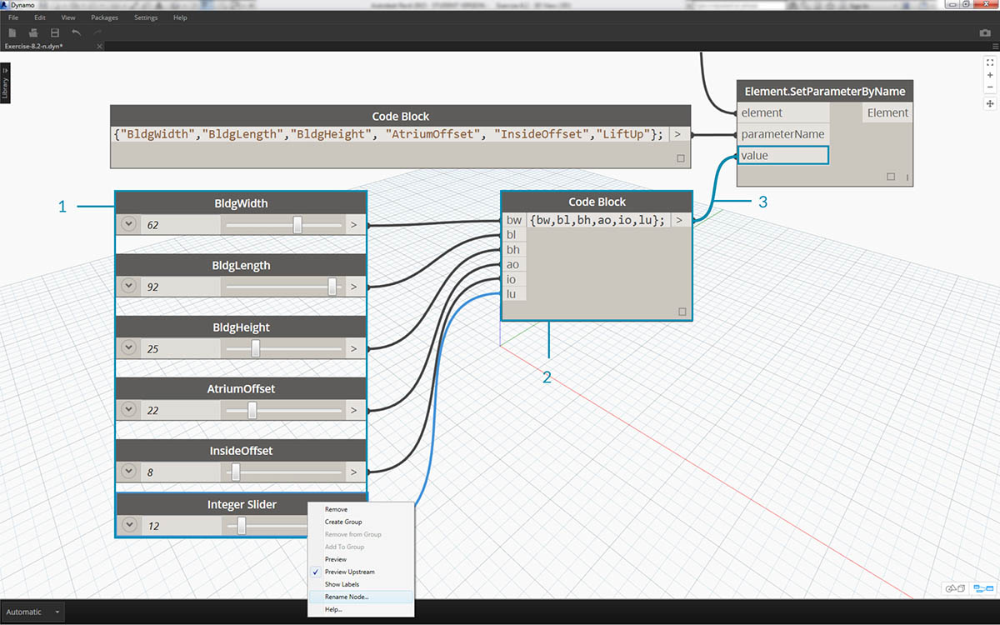
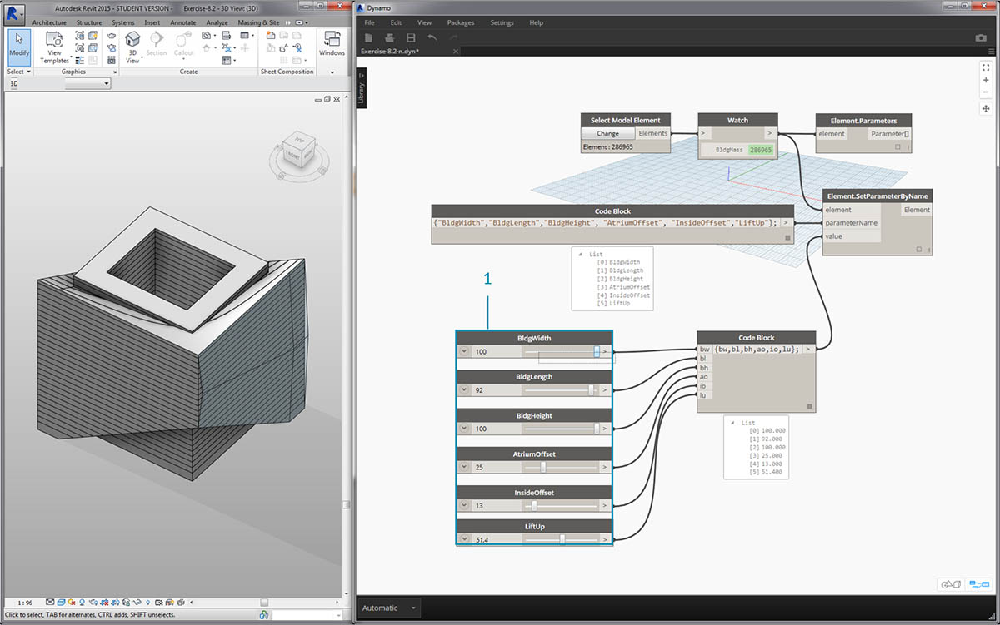
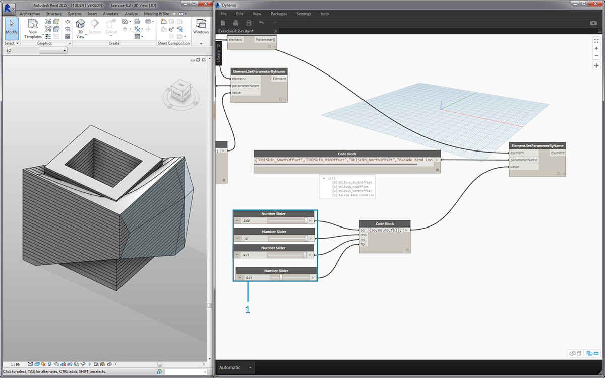

編輯
在參數層級編輯參數是 Dynamo 的一項強大功能。例如，高生產力的演算法或模擬結果可用於驅動該元素陣列的參數。由此在您的 Revit 專案中，同一族群內的一組例證可以具有自訂性質。
類型參數與例證參數

- 例證參數將定義屋頂曲面上的面板孔徑，開口率的範圍是 0.1 至 0.4。
- 以類型為基礎的參數將套用到曲面上的每個元素，因為它們的族群類型相同。例如，每個面板的材料可以由以類型為基礎的參數驅動。

- 如果您先前已設置 Revit 族群，請記住，必須指定參數類型 (字串、數字、標註等)。從 Dynamo 指定參數時，請確保使用正確的資料類型。
- 您也可以搭配使用 Dynamo 與 Revit 族群性質中定義的參數式約束。
做為在 Revit 中對參數的快速檢閱，我們還記得存在類型參數與例證參數。兩者都可以在 Dynamo 中進行編輯，但我們在以下練習中將使用例證參數。
注意事項：在探索編輯參數的廣泛應用時，您可能希望在 Revit 中使用 Dynamo 編輯大量元素。這是運算量極大的作業，即作業可能很慢。若您要編輯大量元素，可能需要在開發圖表時，使用「freeze」節點功能以暫停所執行的 Revit 作業。若要取得有關凍結節點的更多資訊，請參閱「實體」一章中的「凍結」一節。
單位
自 0.8 版起，Dynamo 基本上不使用單位。Dynamo 藉此可保持抽象的視覺程式設計環境。與 Revit 標註互動的 Dynamo 節點將參考 Revit 專案的單位。例如，若您在 Dynamo 中設定 Revit 中的長度參數，則在 Dynamo 中該值的數字將對應於 Revit 專案中的預設單位。以下的練習以公尺為單位。

為了快速轉換單位，使用「Convert Between Units」節點。此工具使用方便，可即時轉換長度、面積與體積單位。
練習
下載此練習隨附的範例檔案 (按一下右鍵，然後按一下「連結另存為...」)。附錄中提供範例檔案的完整清單。
此練習的重點是在 Dynamo 中編輯 Revit 元素而不執行幾何作業。在此我們不匯入 Dynamo 幾何圖形，只編輯 Revit 專案中的參數。此練習是基本練習，對於更高級的 Revit 使用者，請注意這些是量體的例證參數，但可以將相同的邏輯套用至元素陣列，以實現大規模的自訂。僅使用「Element.SetParameterByName」節點即可完成此練習。

先從本節的範例 Revit 檔案開始。我們已移除上一節的結構元素與自適應桁架。在本練習中，我們將重點瞭解 Revit 中的參數式骨架以及 Dynamo 中的操控。
- 在 Revit 的量體中選取建築，我們將在性質面板中看到例證參數的陣列。

- 選取建築量體與「Select Model Element」節點。
- 使用「Element.Parameters」節點，我們可以查詢此量體的所有參數。這包括類型參數與例證參數。

- 參考 Element.Parameters 節點，以尋找目標參數。或者，我們可以檢視上一步的性質面板，以選擇希望編輯的的參數名稱。在此案例中，我們將尋找對建築量體上的大型幾何移動有影響的參數。
- 我們將使用 Element.SetParameterByName 節點變更 Revit 元素。
- 使用 code block，我們將定義這些參數的清單，其中會使用引號納入表示字串的每個項目。我們也可以搭配使用 List.Create 節點與連接至多個輸入的一系列「字串」節點。程式碼塊只是更快更輕鬆。請確保字串與 Revit 中的名稱在大小寫方面精確相符：
{"BldgWidth","BldgLength","BldgHeight", "AtriumOffset", "InsideOffset","LiftUp"};

- 我們還希望指定每個參數的值。加入六個「integer sliders」至圖元區，並將其更名為清單中的對應參數。此外，按照以上影像設定每個滑棒的值。採用從上到下的順序：
62、92、25、22、8、12- 使用與參數名稱具有相同長度的清單定義另一個 code block。在此案例中，我們對建立code block 輸入的變數 (無引號) 進行命名。將滑棒分別插入至每個輸入：
{bw,bl,bh,ao,io,lu};- 將 code block 連接至「Element.SetParameterByName」*節點。勾選「自動執行」後，我們會自動看到結果。
*注意事項：此演示使用例證參數，而不是類型參數。
 正如在 Revit 中一樣，其中許多參數彼此依賴。當然，存在可能導致幾何圖形中斷的組合。我們可以使用參數性質中定義的公式來解決此問題，也可以使用 Dynamo 中的數學運算來設置類似邏輯 (如果您希望在此練習基礎上進行拓展，這是另一項難題)。
- 此組合會為建築量體產生很酷的新設計：
100、92、100、25、13、51.4

- 接下來複製圖表，然後著重瞭解容納桁架系統的正面鑲嵌玻璃。在此案例中，我們將隔離四個參數：
{"DblSkin_SouthOffset","DblSkin_MidOffset","DblSkin_NorthOffset","Facade Bend Location"};- 此外，我們將建立 number sliders，並將其更名為相應的參數。應將前三個滑棒從上到下重新對映至範圍 [0,10]，而最後一個滑棒「Facade Bend Location」應重新對映至範圍 [0,1]。這些值從上到下在開始時應採用以下值 (雖然這些是隨機值)：
2.68、2.64、2.29、0.5- 定義新的 code block ，然後連接滑棒：
{so,mo,no,fbl};

- 透過變更此部分圖表中的 sliders，我們可以大幅提升正面鑲嵌玻璃的重要性：
9.98、10.0、9.71、0.31